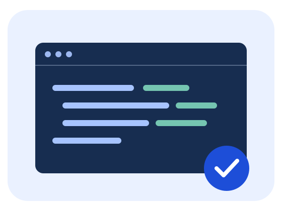

Detyra 28 · HTML / CSS
Seksion prezantues
Një prezantim që përshtatet me ekranin dhe të çon te përmbajtja e faqes.
Mëso duke ndërtuar
Një ide e vogël.
Një aftësi e re.
Praktiko bazat e web-it me projekte të thjeshta dhe përparim të dukshëm çdo ditë.

Pse të praktikosh?
- ✓ Projekte të vogla
- ✓ Kod i kuptueshëm
- ✓ Pa instalime të ndërlikuara
Fillo me një faqe
Shkruaj strukturën në HTML, shto stilin në CSS dhe provo një ndërveprim me JavaScript.
Provo një konvertues temperature →